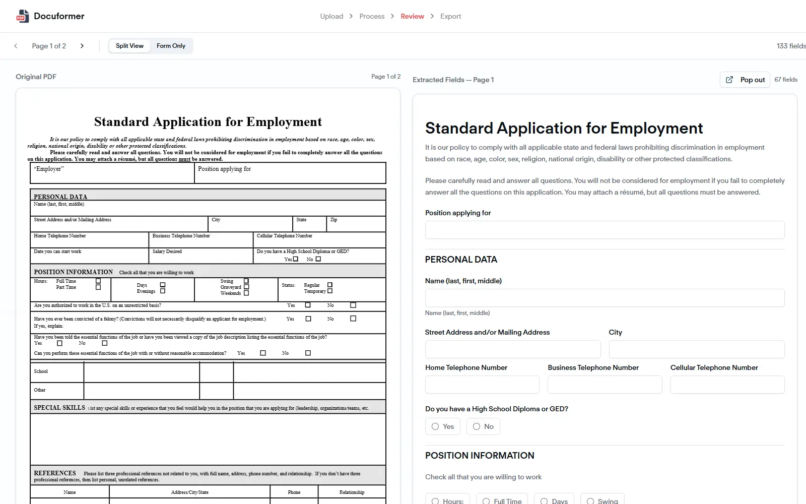
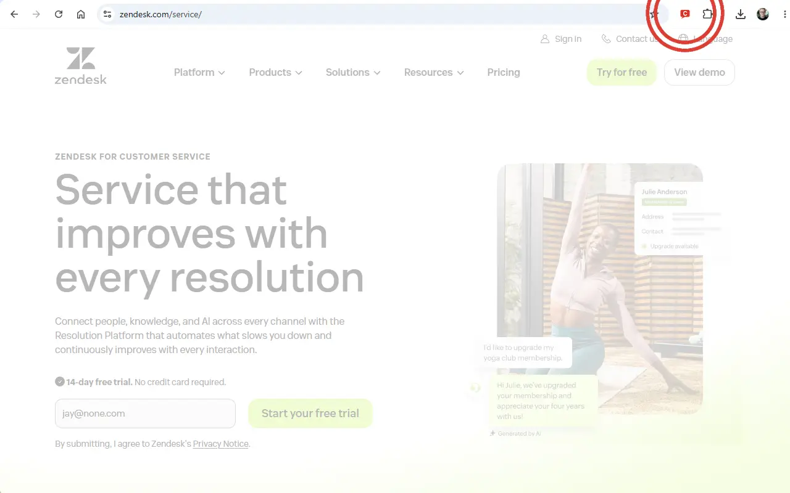
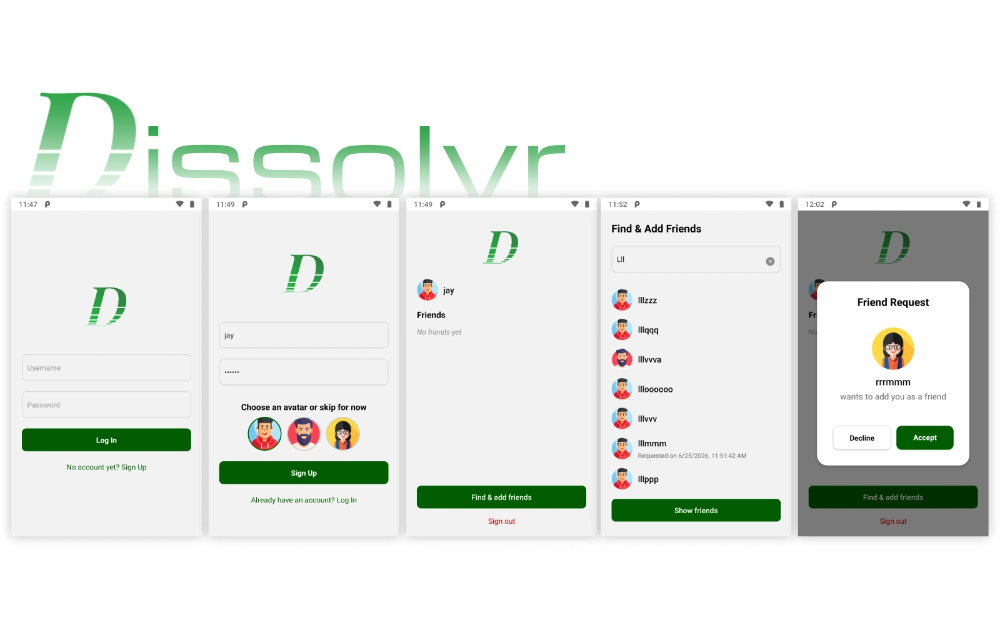
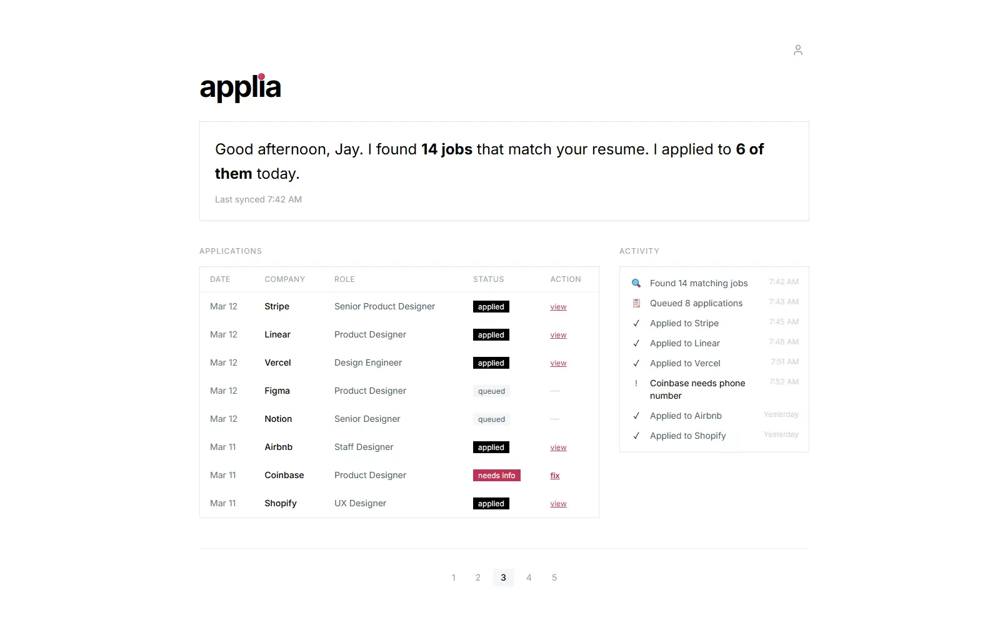
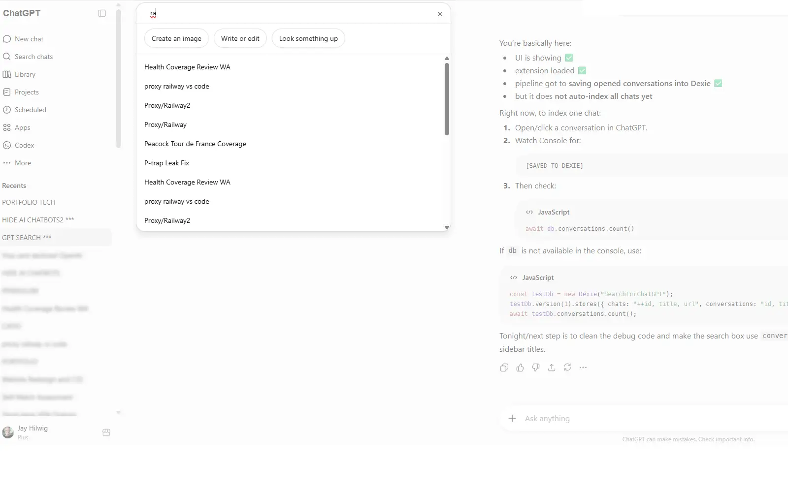

Progress Tracker
Designed customer touchpoints that made product
authenticity and order visibility easier to understand.
A decade designing operational, trust, and AI-assisted systems across Amazon, Microsoft, startups, and SaaS — focused on measurable outcomes over visual noise.
Increased purchase rates 2% and reduced returns 6% through improved trust UX.*
*For brands and products enrolled in the Transparency program.

Modernized appraisal workflows with AI-assisted tooling.

A redesign focused on navigation, hierarchy, and clarity.

| Technology | Designer-perspective description | Level |
|---|
AI-assisted news aggregation and summarization.
Built Tabum.org, a news platform that pulls from diverse sources, generates concise summaries, and highlights patterns across coverage.
Shape of AI flashcards.
Integrating AI into UX: a pattern-based approach for designers exploring how AI changes product behavior, interaction models, and interface decision-making.
A lightweight snapshot of recent GitHub activity across product experiments, prototypes, and coding practice.
A document automation prototype exploring how AI can help parse, clean, transform, and reuse PDF-based content across structured workflows.

A Chrome extension prototype that detects and hides floating AI/chatbot widgets across websites, reducing interface clutter and restoring focus.

A cross-platform iOS/Android messaging prototype using Expo and OpenAI to explore ephemeral communication, privacy controls, and a custom emoji-based language.

A job application assistant that finds relevant roles, tailors application materials, and shows transparent evidence of what was submitted.

A browser extension concept for searching, organizing, and resurfacing past ChatGPT conversations more easily from inside the browser.

Experience across enterprise platforms, startups, education, and patented product work.
 Nuance
Nuance
 Microsoft
Microsoft
 Aloft Appraisal
Acquired
Aloft Appraisal
Acquired
 Centri Tech
Centri Tech
 Pyng.me
Pyng.me
 SNAPin
Acquired
SNAPin
Acquired
Graphical excellence is that which gives to the viewer the greatest number of ideas in the shortest time with the least ink in the smallest space.
Edward Tufte